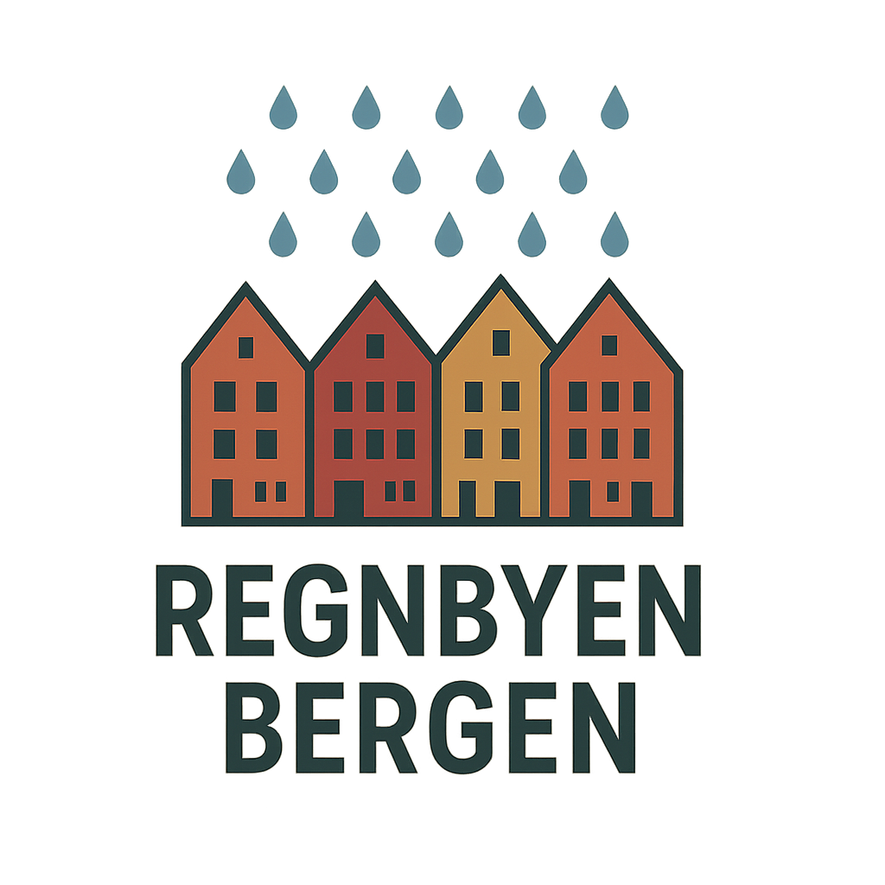

Utforsk noen av måtene du kan reise i Regnbyen
Bergen sitt moderne og miljøvenlege sporvognssystem som forbinder sentrum med forstedene.
Omfattende bussnett som dekker hele Bergen kommune og omegn.
Lån elektriske sparkesykler for raske turer rundt i byen.
Bergen Bysykkel - lån sykkel på over 100 stasjoner rundt i byen.
Døgnåpen taxitjeneste for fleksibel transport i Bergen og omland.
Den ikoniske taubanen som tar deg opp til Fløyen på 6 minutt.